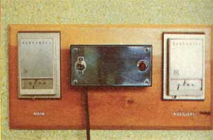
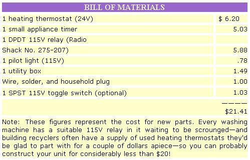
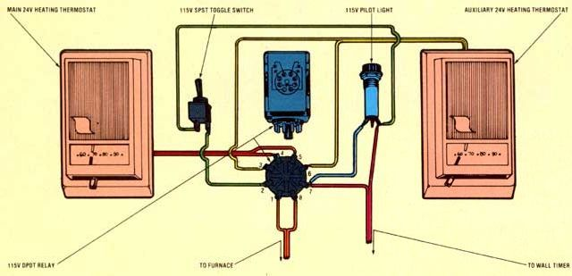

You can save 12% on your annual heating bill-and still wake up to a warm house-with MOTHER'S $21.41 ...
On these long and frigid winter evenings, many sleepers enjoy the economy (and comfort!) of clicking their thermostats back to 60°F (or lower) and snuggling deep beneath an extra blanket or quilt. The cool night air against one's face-contrasted with the envelope of warmth provided by the additional bedclothes-seems to bring on the sleep of the guiltless (well, at least the "slumber of the thrifty").
But oh! those first few dripping-wet steps out of the next morning's shower (and into 60°F air) can be a rude shock. Until now the only way around the a.m. goose bumps-short of an energy-eating space heater-has been either to rise at 4:00 a.m. and kick the thermostat back up, or to purchase a $45 to $90 electronic setback control. MOTHER'S technicians (as well as a number of our readers) weren't satisfied with either one of these approaches ... so they've developed a simpler-and less expensive-way to achieve the same results as are possible with the store-bought setbacks.
Instead of controlling one thermostat with a timer, MOTHER'S researchers took a tip from reader Thorn Daoust and designed a unit that uses two thermostats . . . and a timer to control an electromagnetic switch called a relay. When the relay gets power-by way of the 115V wires from the plug-in timer-it switches the 24V thermostat current to the auxiliary furnace regulator . . . but when the timer kicks back off (in the morning) the temperature control reverts to the main unit. There are eight posts on a DPDT (dual pole dual throw) relay: two for the 115V household line from the timer (Nos. 2 and 7), two for the 24V wires from the furnace (Nos. 1 and 8), and two more for each thermostat (Nos. 3 and 6 ... Nos. 4 and 5).
And for those occasions when you want to stay up a little later than usual-and thus want the house to stay warm for an hour or so more-a manual override switch is helpful. Your timer may already be equipped with such a feature . . . but if not, just wire a toggle switch into one of the 115V lines. (If you include a pilot light in this circuit loop, you'll be able to tell at a glance whether you're on the auxiliary thermostat or not.)
As you can see, there's next to nothing involved in building this thermostat control. A couple of off-the-shelf parts and a little wire and solder are all that go into it. In fact, the only thing about MOTHER'S setback thermostat that takes less effort than building the device is using it.
EDITOR'S NOTE: Thermostats do differ in their specifications. In particular, electric baseboard controls often operate on 115V current and can be wired directly to a timer of suitable load capability. Also, when you purchase an auxiliary thermostat, check to be sure that the unit has a load rating similar to that of your main controller.
|
 |
 |
 |